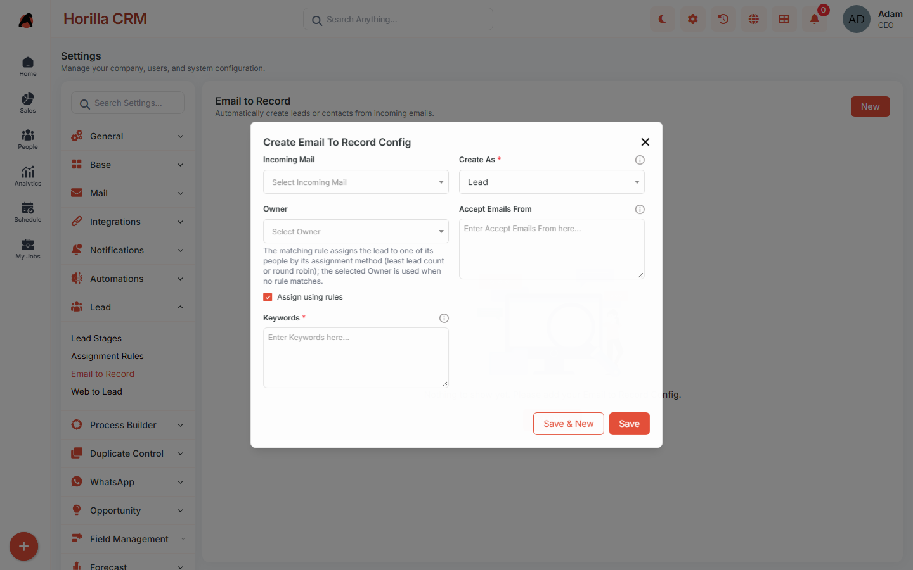

Introduction
Email to Record turns an incoming email into a lead or a contact when the mailbox, sender and keyword rules match.
Purpose
- Automate lead creation from incoming email.
- Standardise how leads are captured.
- Reduce manual data entry errors.
- Make sure customer enquiries receive timely follow-up.
- Capture only the relevant messages.
Navigation Path
Go to Settings → Lead → Email to Record. The page description is Automatically create leads or contacts from incoming emails.
Each saved configuration lists
Incoming Mail, Type, Owner and Actions. New opens the create form. Matching mail is the mail shown
in Inbox.

Creating a Mail to Lead Configuration
- Click the Add New button.
- The Create Mail to Lead Config form opens.

The form records the mailbox, what to create, who owns the record, which senders are accepted, and the keywords.
1. Incoming Mail
- Sets the inbox to monitor.
- Only emails received in the selected mailbox are processed.
- Several configurations can be set up for different mailboxes.
2. Create As
- Lead creates a lead. This is the default.
- Contact creates a contact from the same email.
3. Apply Assignment Rule
- Used when the record is created as a lead.
- When it is on, assignment rules choose the owner, and the selected owner is used only when no rule matches.
- When it is off, the selected owner is always used.
4. Owner
- Sets the user the created record is assigned to when assignment rules do not decide the owner.
5. Accept Emails From (optional)
- Filters by sender address or domain.
- When set, only matching senders create leads.
- Left empty, all incoming emails are considered.
6. Keywords (mandatory)
- Defines the trigger words or phrases.
- Only emails containing these keywords create leads.
- Helps filter for high-intent or otherwise relevant enquiries.
Configuration List View
Once saved, configurations appear in a list.
- Displayed columns: Incoming Mail, Type (Mail), Lead Owner.
- Available actions: Edit, Delete.
This gives one place to manage all Mail to Lead rules.
System Workflow
Once a configuration is active, the system processes email automatically.
Workflow Steps
- The system monitors the configured mailbox.
- An incoming email arrives.
- The email is checked against the sender filter (if one is defined) and the keywords (mandatory).
-
If the conditions match: a lead record is created, Lead Source is set to
Mail, the email content is saved in the lead description, and the lead is assigned to the configured owner.
No manual action is needed after setup.
Data Handling
Lead Creation Rules
- Each qualifying email creates one lead.
- Duplicate handling depends on the system configuration, where applicable.
- The email body is stored as lead context.
Lead Fields Auto-Populated
| Field | Value |
|---|---|
| Lead Source | |
| Description | Email content |
| Owner | The configured user |
Use Cases
- Capturing sales enquiries from shared inboxes.
- Turning website contact emails into leads.
- Filtering high-intent emails with keywords.
- Managing several business email channels.
Benefits
- Automated lead capture.
- Faster response times.
- Less manual work.
- More consistent data.
- Better lead filtering and quality control.
Best Practices
- Use dedicated inboxes for lead capture, such as sales or info addresses.
- Choose precise, relevant keywords.
- Restrict sender domains where needed.
- Assign owners according to the team structure.
- Review and update configurations regularly.
Limitations and Considerations
- Emails without the keywords will not create leads.
- Broad keywords can produce irrelevant leads.
- An incorrect sender filter can block valid enquiries.
- A properly configured and monitored mailbox is required.